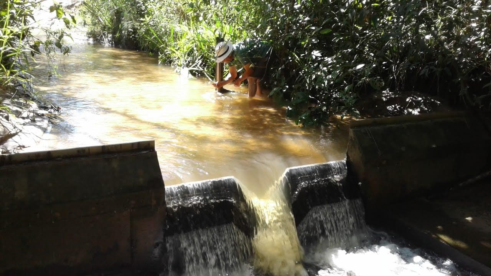

Matérias Recentes
Condições Meteorológicas em julho em São Paulo
Alerta de Chuva
Segurança Hídrica
Segurança hídrica com destaque para abastecimento público até o horizonte de 2035
Aqui você encontra tudo sobre os recursos hídricos de São Paulo. Explore as diversas opções e fique por dentro de informações essenciais para a sustentabilidade do nosso estado.
Dados atualizados e análises sobre a distribuição das chuvas.
Acompanhe dados em tempo real de chuva e vazão.
Informações sobre a quantidade de água disponível.
Equilíbrio entre a entrada e saída de água nos sistemas
Áreas suscetíveis a inundações e erosões
Acompanhe os principais indicadores.
Segurança hídrica com destaque para abastecimento público até o horizonte de 2035
Acompanhe os alertas dos munícipios no momento atual, baseados em dados de postos telemétricos.
-
-
-
-
| Municípios | Chuva (mm) | Evento Máx. (mm) | Méd. hist. (mensal) |
|---|---|---|---|
|
Carregando dados...
|
|||

Fonte:https://monitordesecas.ana.gov.br/

As Salas de Crise são ambientes de coordenação e articulação de atores governamentais e não governamentais que são ou podem ser impactados pelos efeitos de crises hídricas ou têm alguma atuação sobre elas. A sala é, assim, uma das ferramentas utilizada na gestão de eventos hidrológicos críticos envolvendo bacias ou regiões com reservatórios ou outras infraestruturas hídricas com o objetivo de promover medidas de aumento da segurança hídrica, da capacidade de resposta e da resiliência do sistema. As reuniões acontecem periodicamente e permitem a participação tanto presencial quanto por meio de videoconferências, quando os atores envolvidos dialogam para buscar soluções para os problemas verificados.
Produtos produzidos aos anos anteriores
Todos os parceiros que fazerm parte do monitoramento hidrologico. Trabalhando em conjunto tudo fica mais claro e objetivo nas informações de transmissão para todos.